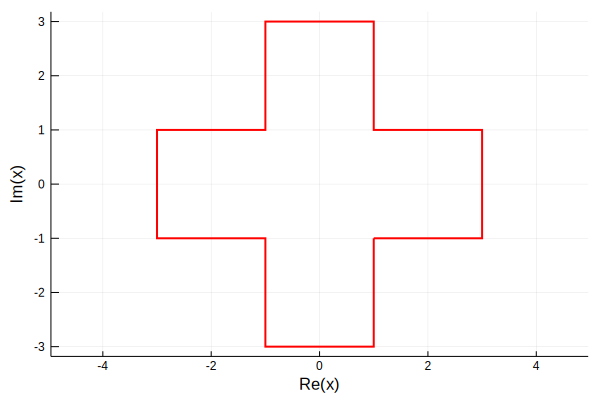
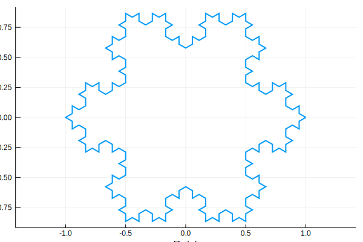
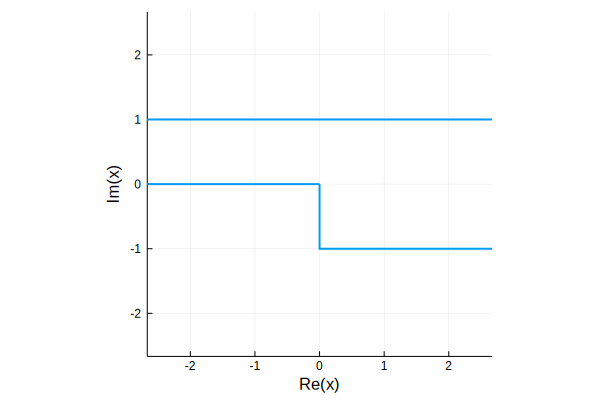
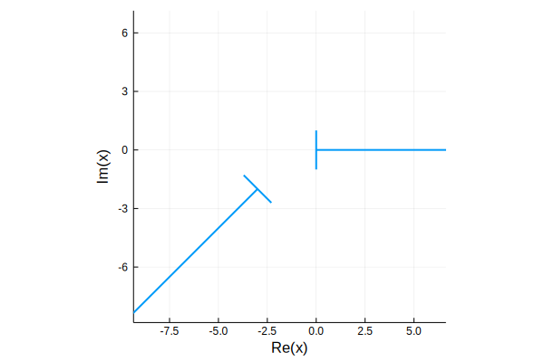

Polygons
There are two specialized implementations of the AbstractClosedPath type: CircularPolygon and the subtype Polygon, which implement the AbstractCircularPolygon and AbstractPolygon types, respectively.
CircularPolygon
A CircularPolygon is a closed path whose curve components are all of type Arc, Ray, and Segment. In contrast to the usual notion of a polygon, the path may be unbounded. Construct a value by calling CircularPolygon(c) with a vector or AbstractPath of curves of appropriate types; continuity and closure of the path are checked as necessary.
In addition to the usual methods for a ClosedPath, the following are implemented:
| Method | Description |
|---|---|
side | Alias for curve. |
winding(P,z) | Winding number of P relative to z. |
truncate(P) | Replace infinite sides with finite ones. |
Polygon
A Polygon is a closed path whose curve components are all of type Ray and Segment. In contrast to the usual notion of a polygon, the path may be unbounded. Construct a value by calling Polygon(c) with a vector or AbstractPath of curves of appropriate types; continuity and closure of the path are checked as necessary.
An alternative construction is to provide a vector of vertices. In place of an infinite vertex, you can supply a tuple of the angles of the two rays that meet there. See the Examples below.
In addition to the methods for the Abstract interface and CircularPolygon, the Polygon type offers
| Method | Description |
|---|---|
angles(P) | Interior angles of the polygon. |
Angles at a finite vertex are in the interval $(0,2\pi]$, while angles at an infinite vertex are in $[-2\pi,0]$, representing the angle at the pole of the Riemann sphere.
Two additional special polygon constructors are defined:
| Method | Description |
|---|---|
rectangle(xlim,ylim) or rectangle(z1,z2) | Construct an axes-aligned rectangle. |
n_gon(n) | Construct a regular n-gon with unit vertices. |
Examples
A big plus:
box = [1-1im,3-1im,3+1im];
plus = Polygon([box;1im*box;-box;-1im*box])
plot(plus,color=:red)/home/travis/.julia/packages/GR/ZI5OE/src/../deps/gr/bin/gksqt: error while loading shared libraries: libQt5Widgets.so.5: cannot open shared object file: No such file or directory
connect: Connection refused
GKS: can't connect to GKS socket application
Did you start 'gksqt'?
GKS: Open failed in routine OPEN_WS
GKS: GKS not in proper state. GKS must be either in the state WSOP or WSAC in routine ACTIVATE_WS
A Koch snowflake:
v = vertices(n_gon(3));
pattern = [1; (v.-v[1])/(v[1]-v[3])/3 .+ 2/3 ];
koch(a,b) = b .+ (a-b)*pattern;
for m = 1:3
@show n = length(v);
global v = vcat( [koch(v[k],v[mod(k,n)+1]) for k in 1:n]... );
end
plot(Polygon(v))n = length(v) = 3
n = length(v) = 12
n = length(v) = 48
/home/travis/.julia/packages/GR/ZI5OE/src/../deps/gr/bin/gksqt: error while loading shared libraries: libQt5Widgets.so.5: cannot open shared object file: No such file or directory
connect: Connection refused
GKS: can't connect to GKS socket application
Did you start 'gksqt'?
GKS: Open failed in routine OPEN_WS
GKS: GKS not in proper state. GKS must be either in the state WSOP or WSAC in routine ACTIVATE_WS
Infinite channel with a step:
p = Polygon([0,-1im,(0,0),1im,(pi,pi)])Polygon with 5 vertices:
0.0 + 0.0im, interior angle 1.5⋅π
0.0 - 1.0im, interior angle 0.5⋅π
Inf + 0.0im, interior angle 0.0⋅π
0.0 + 1.0im, interior angle 1.0⋅π
Inf + 0.0im, interior angle 0.0⋅πplot(p)/home/travis/.julia/packages/GR/ZI5OE/src/../deps/gr/bin/gksqt: error while loading shared libraries: libQt5Widgets.so.5: cannot open shared object file: No such file or directory
connect: Connection refused
GKS: can't connect to GKS socket application
Did you start 'gksqt'?
GKS: Open failed in routine OPEN_WS
GKS: GKS not in proper state. GKS must be either in the state WSOP or WSAC in routine ACTIVATE_WS
Infinite polygons can seem quite strange sometimes:
probe1 = [1,0,1im,-1im,0];
probe2 = exp(-1im*3π/4)*probe1 .- (3 + 2im);
p = Polygon([probe1...,(0,-3π/4),probe2...,(-3π/4,0)])/home/travis/.julia/packages/GR/ZI5OE/src/../deps/gr/bin/gksqt: error while loading shared libraries: libQt5Widgets.so.5: cannot open shared object file: No such file or directory
connect: Connection refused
GKS: can't connect to GKS socket application
Did you start 'gksqt'?
GKS: Open failed in routine OPEN_WS
GKS: GKS not in proper state. GKS must be either in the state WSOP or WSAC in routine ACTIVATE_WS